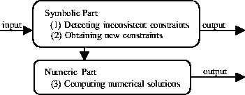

Next: Symbolic part
Up: Algebraic under constraint solver
Previous: Provided facilities
Architecture of the algebraic under constraint solver
The algebraic under constraint solver consists of two parts: the symbolic part and the numeric part.
Figure 1:
Architecture of the algebraic under constraint solver
 |
Figure 1 shows the architecture of the algebraic under constraint solver. The constraint set is firstly received by the symbolic part. In the symbolic part, a reduction tree is constructed and the following operations are conducted:
- 1.
- Detecting constraints inconsistent with each other;
- 2.
- Obtaining new constraints.
If inconsistency is found or a new constraint is obtained, it is immediately reported to the designer. Otherwise, the constraint set is sent to the numeric part. In the numeric part, several numerical solutions are computed by making the under constrained problem result in the constraint satisfaction minimizing problem. If there exists no solution, an empty set is returned. In Section 2.4 and 2.5, algorithms used in the numeric part and symbolic part are described.
IMACS ACA'98 Electronic Proceedings